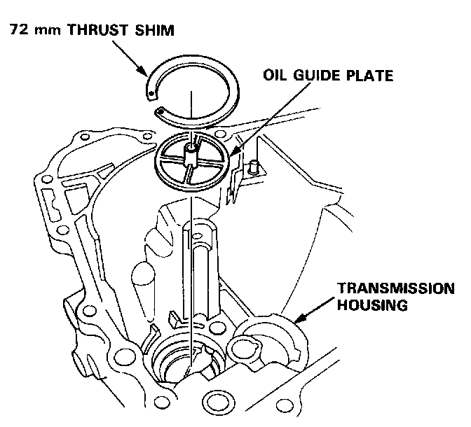
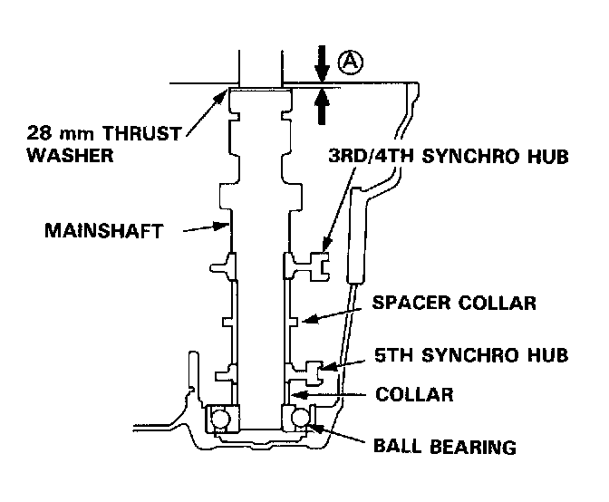
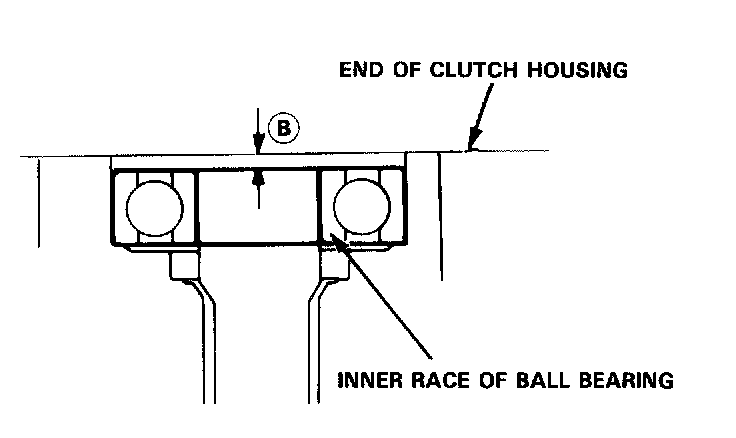
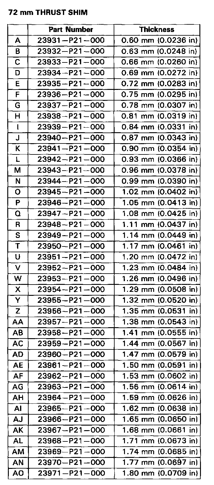
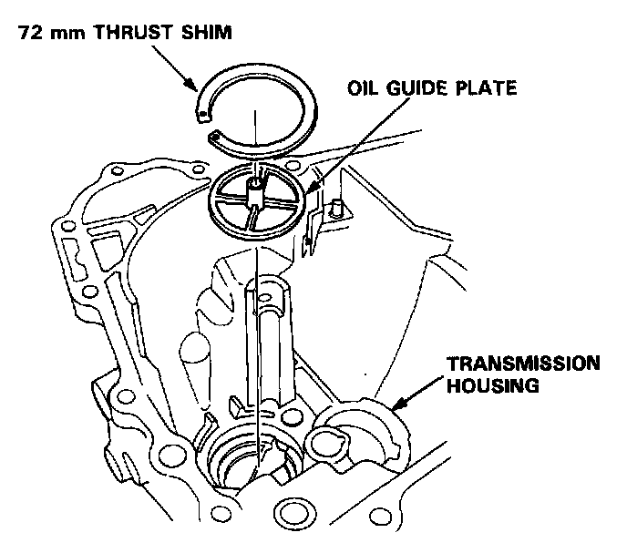
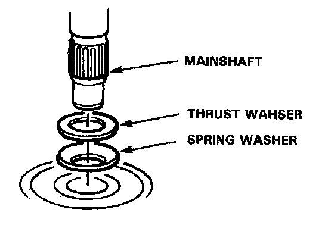
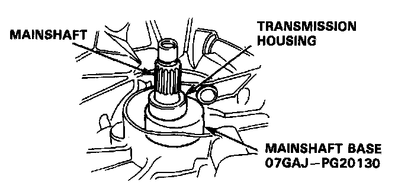
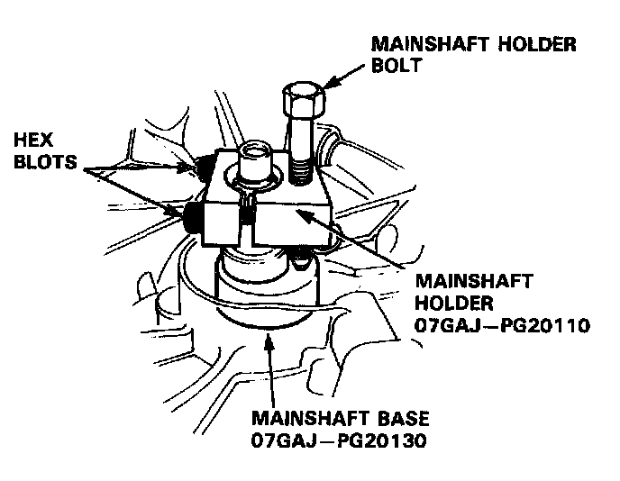
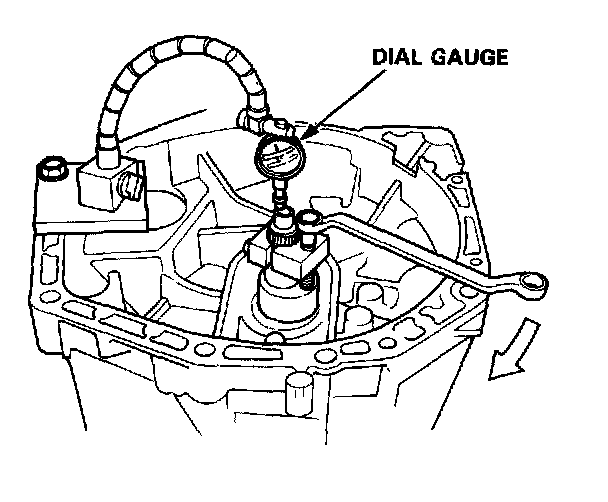

Mainshaft: Adjustments
Mainshaft Thrust Shim Adjustment
1. Remove the 72 mm thrust shim and oil guide plate from the transmission housing.
2. Install the 3rd/4th synchro hub, spacer collar, 5th synchro hub, collar, ball bearing, and 28 mm thrust washer on the mainshaft. Install the assembly in the transmission housing.

3. Measure the distance (A) between the end of the transmission housing and 28 mm thrust washer.
NOTE:
- Use a straight edge and feeler gauge.
- Measure at three locations and average the readings.

4. Measure the distance�between the surfaces of the clutch housing and bearing inner race.
NOTE:
- Use a straight edge and feeler gauge.
- Measure at three locations and average the readings.

5. Select the proper thrust shim on the basis of the following calculations;
NOTE: Use only one shim.
(Basic Formula)
(A)+(B) - 1.00 = shim thickness
Example of calculation:
Distance (A) (2.05 mm) + Distance (B) (0.09 mm) = 2.14 mm subtract the spring washer height (1.00 mm) = the required thrust shim (1.14 mm)

6. Check the thrust clearance in the manner described in image.
NOTE:
- Clean the thrust washer, spring washer and shim thoroughly before installation.
- Install the thrust washer, spring washer and shim properly.
a. Install the 72 mm thrust shim selected and oil guide plate in the transmission housing.

b. Install the thrust washer and spring washer in the mainshaft.
c. Install the mainshaft in the clutch hosing.
d. Place the transmission housing over the mainshaft and onto the clutch housing.
e. Tighten the clutch and transmission housings with several 8 mm bolts.
f. Tap the mainshaft with a plastic hammer.
7. Check the thrust clearance in the manner described.
NOTE: Measurement should be made at room temperature.

a. Slide the mainshaft base and the collar over the mainshaft.

b. Attach the mainshaft holder to the mainshaft as follows:
- Back-out the mainshaft holder bolt and loosen the two hex bolts.
- Fit the holder over the mainshaft so its lip is towards the transmission.
- Align the mainshaft holder's lip around the groove at the inside of the mainshaft splines, then tighten the hex bolts.
c. Seat the mainshaft fully by tapping its end with a plastic hammer.
d. Thread the mainshaft holder bolt in until it just contacts the wide surface of the mainshaft base.

e. Zero a dial gauge on the end of the mainshaft.
f. Turn the mainshaft holder bolt clockwise; stop turning when the dial gauge has reached its maximum movement. The reading on the dial gauge is the amount of mainshaft end play.
CAUTION: Turning the mainshaft holder bolt more than 60 degrees after the needle of the dial gauge stops moving may damage the transmission.
g. If the reading is within the standard, the clearance is correct. If the reading is not within the standard, recheck the shim thickness.
Standard: 0.11-0.16 mm (0.004-0.007 in)